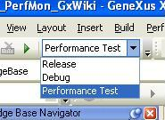
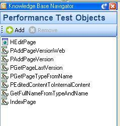
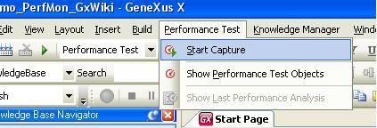
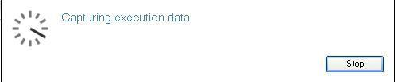
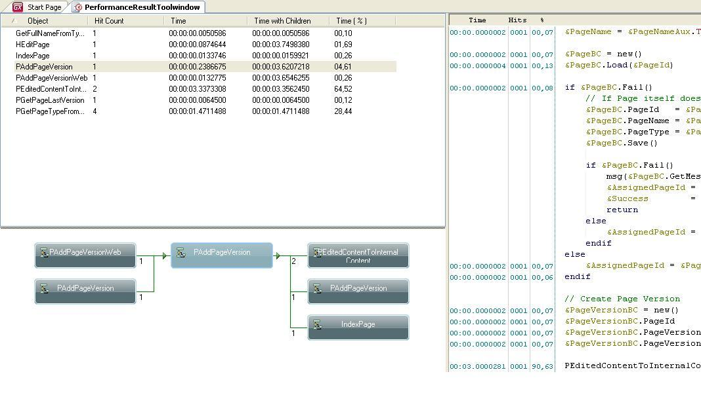

Profiling is used to help fix performance problems by means of running the application and keeping track of what was executed, how many times and for how long. Deprecated: Since GeneXus 16 upgrade 8. Replaced by Code Coverage and Profiling.
Follow these basic steps to profile your application: 1. Change to Performance Test mode  2. Add objects to the Performance Test Objects tool window. These are the objects that will be monitored  3. Select Menu / Performance Test / Start Capture to start capturing performance information  4. The profiler is capturing information:  5. Execute the application and select Stop when done. The performance analysis tool window is displayed for you to analyze  Important:
See alsoGeneXus Debugger and Profiling common issues
|
| Backlinks | ||
| Configuration options | Debugging in GeneXus | GeneXus Debugger and Profiling common issues |